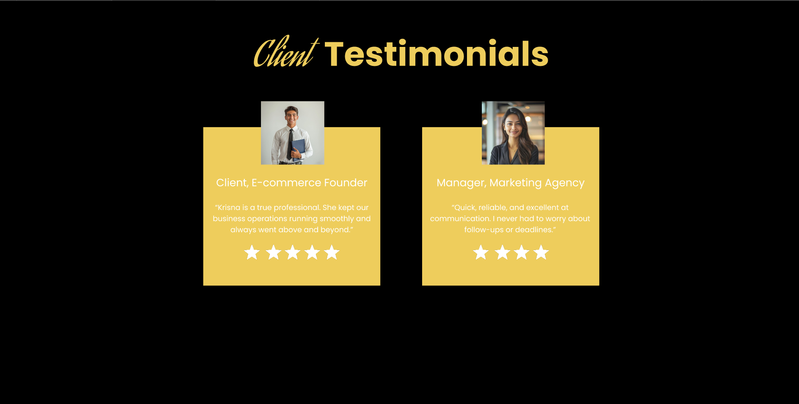
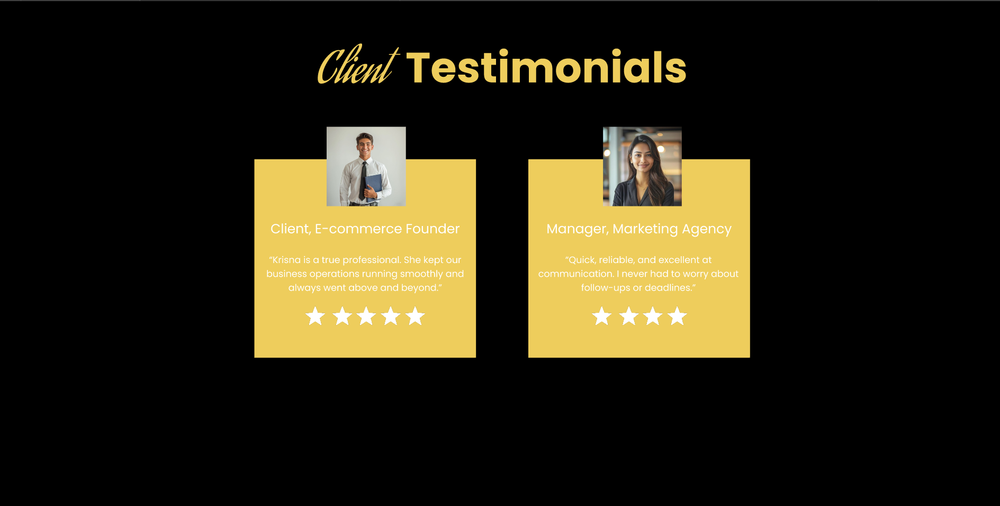

A Polished, User-Friendly Portfolio for Krisna Cuabo
CLIENT
Krisna Cuabo
PROJECT TYPE
Web Design
This portfolio was designed to promote Krisna Cuabo’s brand, increase credibility, and drive client engagement through clear, confident storytelling and design.
 

Visual Design
- Color Palette: Gold, black, and white for sophistication and trust.
- Typography: Rounded fonts paired with bold headers for modern appeal.
- Imagery: High-quality portraits to humanize and build trust.
Navigation & Layout
- Streamlined Structure: Clear hierarchy for easy scanning.
- Storytelling Flow: From intro to services, experience, and CTA.
- Mobile Responsiveness: Optimized for all screen sizes.
Core Features
- About Section: Strong personal narrative.
- Service Cards: Organized offerings with visuals.
- Experience Timeline: Clear display of roles and achievements.
Outcome & Impact
- Boosted Krisna’s personal brand with professional visual design.
- Improved engagement and clarity through intuitive navigation.
- Created a portfolio that converts visitors into clients.